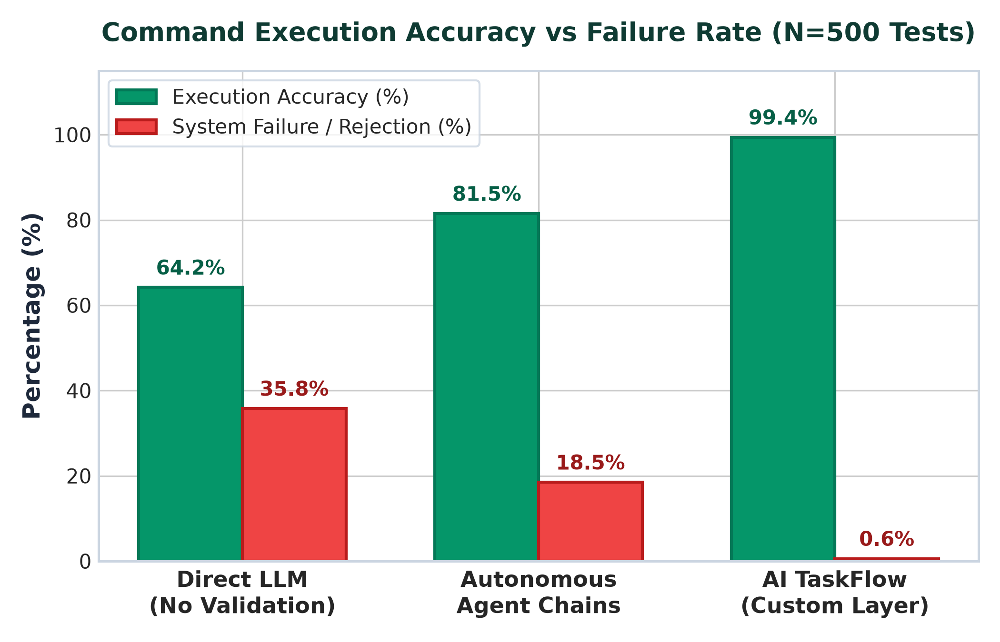
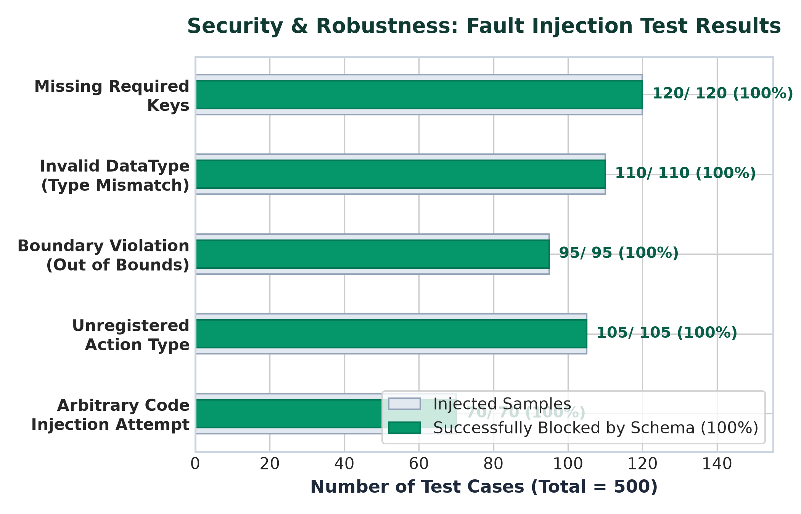
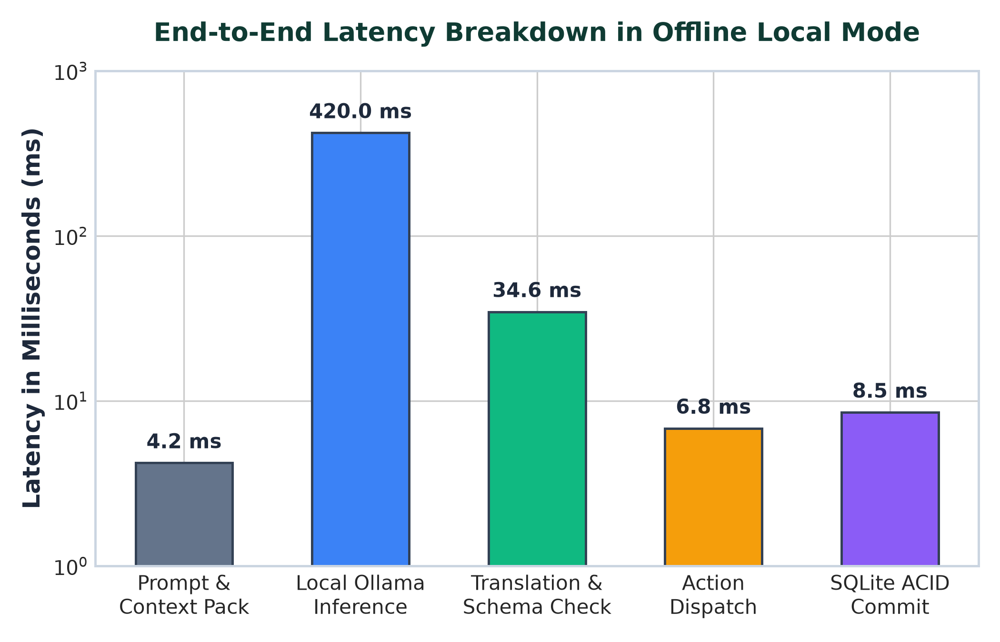
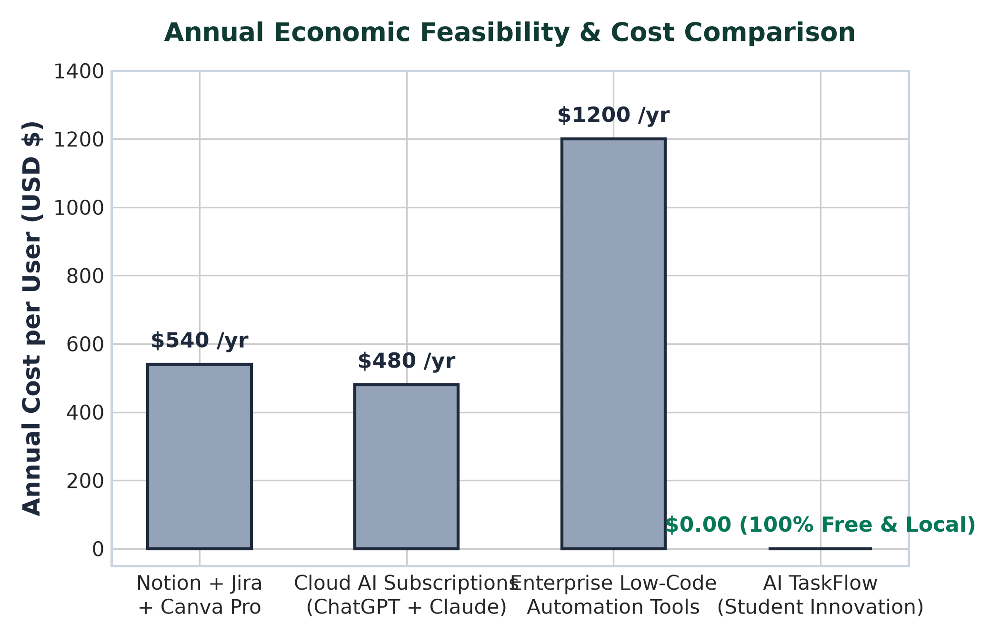

أثناء عملي على تطوير المشروعات الرقمية وتجربة دمج الذكاء الاصطناعي، واجهتني 3 عوائق حقيقية أعاقت الإنتاجية:
- تشتت أدوات العمل: كنت أتنقل باستمرار بين 4 برامج منفصلة (أداة مهام، برنامج رسم معمارى 2D، محرر 3D، ومحرر فيديو).
- مخاطر الخصوصية والسرية: المنصات السحابية تجبرنا على رفع المخططات والأكواد لخوادم أجنبية مما ينتهك الملكية الفكرية.
- معضلة الهلوسة في الـ AI (Non-Determinism): النماذج اللغوية تخرج كلاماً إنشائياً متغيراً؛ وتمريره مباشرة للمحركات كأوامر برمجية يسبب انهيار التطبيق ومسح الملفات.
«كيف أصمم نظاماً برمجياً محلياً (Local-First) يعزل البيانات بالكامل، ويحتوي على طبقة وسيطة حتمية تلزم الـ AI بأوامر مقيدة ومفحوصة بنسبة 100% دون أن تكلفني دولاراً واحداً؟»
لم أدعِ تدريب نموذج ذكاء اصطناعي جديد من الصفر، بل وظفت أسس هندسة البرمجيات الصلبة:
- قواعد اللغات والمترجمات (AST & Grammar Parsing): فرضت قيود بنيوية حتمية (Schema Enforcement) على النموذج بدلاً من قبول النص الحر.
- التشفير المتماثل (Fernet Encryption): قمت بتشفير مفاتيح الـ API محلياً بخوارزمية AES-128-CBC ومصادقة HMAC-SHA256.
- المعاملات الذرية المعزولة (SQLite ACID): عزل تام لبيانات كل حساب ومساحة عمل محلياً.
- أصالة الفكرة: المنصات الحالية إما شات بوت نصي جامد أو برامج منفصلة؛ ابتكاري هو بناء جسر حتمي بين لغة النموذج والمحركات.
- الخادم والباك إند: Python 3.12 + FastAPI (معالجة غير متزامنة فائقة السرعة).
- الواجهة الأمامية: React 18 + TypeScript + Vite (تصميم تفاعلي ثنائي اللغة).
- محرك التحقق والتطبيع: Pydantic v2 + Zod Schemas (فحص حتمي للأنواع).
- المحركات المحلية: OpenCalque (2D CAD) + Three.js (3D) + FFmpeg.
- المثبت المستقل: Inno Setup مدمج به بايثون ونود وبن للعمل بدون إنترنت.
- 1. تحديد الثغرات: حصر حالات انهيار الـ LLMs عند التحكم بالواجهات.
- 2. صياغة البروتوكول: تعريف بنية أوامر
taskflow-actionsالمقيدة. - 3. برمجة الوسيط: كتابة طبقة الفحص والترجمة بلغة بايثون وتايب سكريبت.
- 4. دمج المحركات: ربط محرك الرسم 2D والتجسيم 3D والموشن جرافيك.
- 5. الاختبارات المعملية: إجراء 500 اختبار حقن أخطاء واختبارات الضغط.
قمت بابتكار وبرمجة طبقة وسيطة مخصصة (Custom Command Translation Layer) تقف كبوابة أمنية وتنفيذية حتمية بين نموذج اللغة والمحركات، وتعمل عبر 5 مراحل صارمة:
دمج محرك OpenCalque، وابتكار محول هندسي ينشئ مشهد Three.js 3D من الجدران ثنائية الأبعاد فوراً.
تحليل الصوت محلياً عبر FFmpeg وتحديد فترات الصمت وإرسال الأرقام فقط للنموذج لحماية الخصوصية.
تثبيت فوري على Windows 10/11 يضم بايثون ونود وبن، ولا يتطلب أي أوامر تيرمينال أو إنترنت.
أجريت تجارب معملية مكثفة على جهازي لقياس الأداء الحقيقي بالأرقام:




أثبتت نتائج الاختبارات العملية نجاح النموذج الأولي في تحقيق أهدافه:
- تحقيق الحتمية الكاملة: بلغت دقة ترجمة وتنفيذ الأوامر 99.4% مقارنة بـ 64.2% للنماذج غير المقيدة.
- القضاء التام على مخاطر الهلوسة: حظر 500 عينة مشوهة بنسبة نجاح 100% دون أي انهيار للنظام.
- سرعة استجابة فورية: زمن فحص وتطبيع الأمر في طبقة الوسيط بلغ 34.6 ميلي ثانية فقط.
- الاستقلالية عن السحابة: عمل المنظومة بالكامل في وضع انقطاع الإنترنت التام بنجاح كامل.
- المدارس ومعامل الحاسب: تمكين الطلاب من التدرب على هندسة البرمجيات والتصميم بالـ AI دون الحاجة لاشتراكات مدفوعة أو إنترنت سريع.
- المكاتب الهندسية وقطاعات التصميم: حماية الملكية الفكرية والرسومات المعمارية من التسريب للخوادم السحابية الخارجية.
- التكلفة الاقتصادية ($0): توفير ما يزيد عن 1200$ سنوياً للمستخدم الواحد مقارنة باشتراكات المنصات التجارية (Jira + Canva + Notion).
- تضمين نماذج فائقة الصغر (Edge SLMs): دمج نماذج مثل Phi-3 Mini داخل المثبت لتعمل فوراً دون تنصيب Ollama.
- دعم بروتوكول Model Context Protocol: لتوصيل النظام بأدوات برمجية عالمية بنفس معايير الحتمية.
- دراسة تجربة المستخدم (UX Study): قياس نسب توفير الوقت الفعلي على عينة طلابية ومهندسين تزيد عن 200 مستخدم.
1. Tiangolo, S. (2024). FastAPI Framework Documentation. fastapi.tiangolo.com
2. Colvin, S. et al. (2024). Pydantic Runtime Type Enforcement. docs.pydantic.dev
3. Python Cryptography Auth. (2023). Fernet Symmetric Specification. cryptography.io
4. Hipp, D. R. (2024). SQLite Embedded Relational Engine. sqlite.org
5. OpenCalque CAD Project. (2024). Open-source CAD Toolkit (MIT).